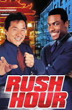

One of my most notable interests is reading. My interest not only provides me with a means of relaxation and stress relief but also serves as a means of personal growth and self-improvement. I like to read books that have action, historical, literary, novel, thriller, and slice-of-life genres. Those kinds of books gave me an enjoyment of plot twists stemming from the sense of unpredictability and surprises they bring to the story. I like books written by Ramli Awang Murshid and Teme Abdullah For example, a novel named Raudhah was written by local author, Ramli Awang Murshid it tells about a killer who killed a white-collar criminal and has the forgiveness of Allah S.W.T. is not limited, even to those who have committed major sins. He also uses the same concept as a year in this world is like a thousand years in the hereafter. When two worlds are different, the laws of nature are also various including the concept of time. Even though, he used Albert Einstein's Theory without realizing it, which is the Theory of Relativity of Time and Space. That element of surprise can be attributed to plot twists challenging my assumptions and forcing me to reevaluate the narrative, making the reading experience more engaging and memorable. Reading also exposes me to new ideas, perspectives, and knowledge, which can broaden my understanding of the world and enhance my critical thinking skills. Moreover, reading can be a therapeutic activity, allowing me to escape into a different world and temporarily forget about my daily worries. My interest in learning new languages, particularly Korean and Japanese, is another thing for my curiosity and desire for personal growth. My interest challenges my cognitive abilities and gives me a sense of accomplishment and pride in my abilities. Additionally, learning new languages can broaden my cultural understanding and enhance my communication skills, making me a more well-rounded individual.
My love for music is another significant aspect of my personality. I like to listen to religious and pop music especially when I'm doing some work such as doing an assignment, cleaning the room, doing a revision, and more. Listening to music can have numerous benefits for my mental and emotional well-being, including reducing stress and anxiety, improving mood, and providing a sense of relaxation and calm. Music can also be a source of motivation and inspiration, helping me to stay focused and productive throughout the day. Next, watching movies is another one of my favorite hobbies. I like to watch movies that have genres of comedy, action, and animation. My favorite movie is Rush Hour, an American buddy cop action comedy film where it stars Jackie Chan and Chris Tucker as mismatched police officers who are assigned to rescue a Chinese diplomat's abducted daughter. My activity can provide a sense of escapism and relaxation, allowing me to temporarily forget about my daily worries and immerse myself in a different world. Watching movies can also be a social activity, providing an opportunity for me to bond with friends and family over shared interests.

Sleep is another essential aspect of my daily routine. I love sleeping a lot. As I know, sufficient sleep is crucial for maintaining my physical and mental health, and my routine of sleeping reflects my understanding of its importance. Good sleep can improve my mood, concentration, and overall well-being, making me more productive and focused throughout the day. Other than that, I also love cooking. Cooking is a way to express my creativity and desire for self-expression. I like to make food every day for my family whether it's for breakfast, lunch, and dinner. Whenever it is for lunch and dinner I will make food for us to eat together. Cooking can also be a social activity, providing an opportunity for me to bond with friends and family over shared meals and experiences. Cooking can be a therapeutic activity, allowing me to express myself creatively and provide a sense of accomplishment and pride in my culinary creations.
In conclusion, my interests and hobbies are a reflection of my unique personality and how I choose to spend my free time. From reading and learning new languages to listening to music, watching movies, sleeping, and cooking, my diverse range of hobbies and interests provide a glimpse into my multifaceted nature. These activities not only provide me with a sense of relaxation and enjoyment but also serve as a means of personal growth, self-improvement, and social connection.